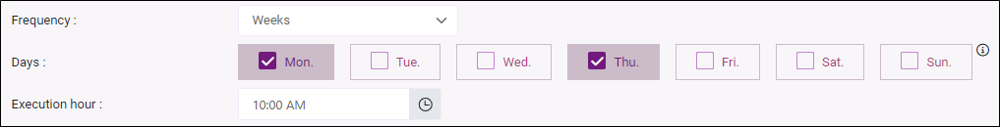
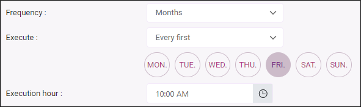
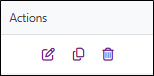

Set up automatic alerts
The automatic alert feature allows you to monitor the evolution of an indicator without having to perform regular manual checks. It automatically notifies you when a key indicator shows a significant upward or downward variation between two defined analysis periods. This rapid detection helps identify potential trend breaks or anomalies, allowing you to react more quickly.
Quick access to sections
Create an automatic alert
To create an automatic alert, follow these steps:
-
From the Questionnaire section, click on Alerts in the side menu.
-
Click on Create alert.
-
Define the alert name and its validity period by filling in the Start on / Stop on fields.
If you do not want to set an end date, uncheck the Stop on box.
-
Set the trigger conditions for the alert:
-
Select the variable on which the alert should be based, as well as the indicator to use from the Indicator field.
Available indicators depending on the type of the selected variable: Mean, Median, NPS Score, Effective responses.
-
Define the condition by selecting a criterion based on a fixed threshold or a trend change, then enter a value:
-
 Fixed threshold
Fixed threshold
-
Greater than;
-
Greater than or equal to;
-
Less than;
-
Less than or equal to.
-
-
Trend change
-
Increase (pts);
-
Decrease (pts);
-
Increase or decrease (pts);
-
Increase (%);
-
Decrease (%);
-
Increase or decrease (%).
-
-
-
Select the period on which the trigger conditions should be based:
-
Based on all data;
-
Based on a rolling period by defining the number of last x days and the variable to use as the reference.
For a criterion based on a trend change, you must also select the comparison period. This period can be:
-
Based on all data;
-
Based on a rolling period, by defining the number of previous x days.
The comparison period is the period immediately preceding the analysis period.
You can add a minimum response threshold required to trigger the alert. To do this, check Minimum number of responses threshold and enter a value. This threshold applies to all defined periods.
If necessary, you can restrict the alert to a specific profile. Check Restrict the alert to a profile and click Select to choose the relevant profile.
EXAMPLE: We want to be notified as soon as the average satisfaction score of guests who stayed at the hotel falls below 9.
-
-
-
Set the check and notification frequency:
-
Check frequency: select how often the alert should be evaluated: Hours / Days / Weeks / Months and configure the corresponding options:
-
For Hours / Days: enter a value in the Execute every field.
-
For Weeks: select the days of the week and set the execution hour.
EXAMPLE: The check will be run every week on Mondays and Thursdays at 10:00.

-
For Months, several options are available:
Same day each month:
The check will be run on the x day of each month at x hour (set using the Every and Execution hour fields).
Every first:
The check will be run on the first (day of the week to be defined) of each month at x hour.
EXAMPLE: The check will run every first Friday of the month at 10:00.

Every last:
The check will be run on the last (day of the week to be defined) of each month at x hour.
First day of the month:
The check will be run on the first day of each month at x hour.
Last day of the month:
The check will be run on the last day of each month at x hour.
-
-
-
Select the sender email address to use and define the sender name.
-
-
Select the language of the message to be sent.
A default message is sent to the recipients. It includes the survey name, the alert name, as well as the trigger date and conditions.
If you want to customize the subject and content of the message, click Custom message.
NOTE: The content of the merge fields in the custom message is displayed in the language selected in the previous step.
To restore the default message, click Reset the default email subject and content.
-
Click Save.


If the alert conditions are met during a check, an automatic message is sent to the defined recipients.

Examples of alert trigger condition configurations
The examples below illustrate different possible configurations of automatic alerts depending on the type of condition, the analysis period, and the indicators used.
Example 1 — Fixed threshold: detecting a low satisfaction score (based on all data)
EXAMPLE: You want to be notified if the room cleanliness satisfaction becomes too low.
Alert configuration:
- Analyzed variable: Room cleanliness
- Indicator: Average
- Condition: Less than 7.5
- Analysis period: all data
The alert is triggered if the average calculated for the variable Room cleanliness, across all data defined for the alert, becomes lower than 7.5.
Example:
- Current average across all data: 7.2
→ Since the average is lower than 7.5, the alert is triggered.
Example 2 — Fixed threshold: detecting low satisfaction over a rolling period
EXAMPLE: You want to be notified if satisfaction regarding the reception quality becomes too low over a recent period.
Alert configuration:
Analyzed variable: Reception quality
Indicator: Average
Condition: Less than 8
Analysis period: Last 10 days (rolling period)
Based on the variable: Response recording date
The alert is triggered if the average calculated for the variable Reception quality, over the last 10 days based on the Response recording date variable, is lower than 8.
Example:
Average from May 5 to May 14: 7.6
Since the average is lower than 8, the alert is triggered.
Example 3 — Trend change: detecting a rapid drop in satisfaction (rolling period)
EXAMPLE: You want to be notified if the average satisfaction score decreases significantly over a short period.
Alert configuration:
- Analyzed variable: Overall stay satisfaction
- Indicator: Average
- Condition: Decrease of 1 point
- Analysis period: Last 7 days (rolling period)
- Based on the variable: Stay date
- Comparison period: Previous 7 days
The alert is triggered if the average calculated for the variable Overall stay satisfaction, over the last 7 days based on the Stay date variable, is at least 1 point lower than the average calculated for the previous 7 days.
Example:
- Average from March 1 to March 7: 8.6
- Average from March 8 to March 14: 7.4
→ The decrease is 1.2 points: the alert is triggered.
Example 4 — Trend change: detecting an increase in NPS
EXAMPLE: You want to be notified when a significant improvement in the NPS score is observed.
Alert configuration:
- Analyzed variable: Would you recommend this hotel to a friend?
- Indicator: NPS score
- Condition: Increase of 10%
- Analysis period: Last 30 days
- Based on the variable: Stay date
- Comparison period: Previous 30 days
The alert is triggered if the NPS score calculated for the variable Would you recommend this hotel to a friend?, for the last 30 days based on the Stay date variable, is at least 10% higher than the score calculated for the previous 30 days.
Example:
- NPS from the previous month: 40
- NPS from the last 30 days: 46
→ The NPS increased by 15%: the alert is triggered.
Edit, duplicate or delete an alert
You can edit, duplicate or delete an alert at any time, for example to activate or deactivate it, by clicking the appropriate icon in the Actions column of the alerts list.

View alert history
To access the alert history:
-
From the Questionnaire section, click on Alerts then on Alert History in the side menu.
A table will appear showing the alert name, trigger date, and a summary.
You can filter this list and export it to Excel format.